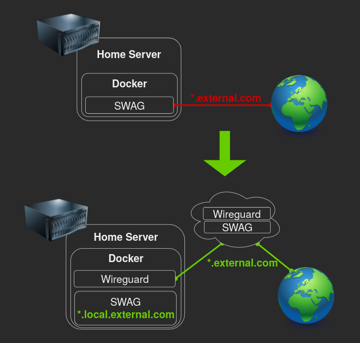
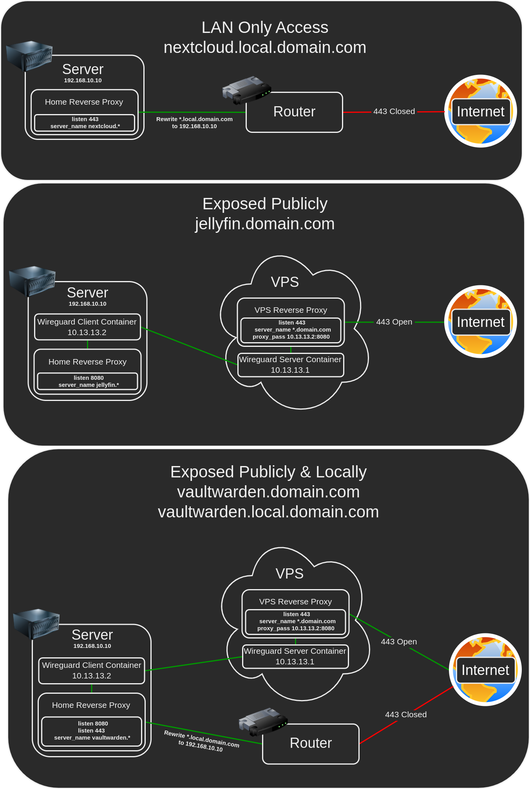

VPS Proxy

This setup allows you to hide your home IP, protect your privacy and protect your home server against DDOS attacks while keeping all of your data at home.
Once it's up and running, exposing a resource through the VPS is as simple as adding one line to your home SWAG.
The TLDR version is:
- Create a VPN tunnel between your home and a VPS
- Configure SWAG to proxy traffic through the tunnel
- Configure Fail2ban to block attackers
There are many ways to create this setup with many variations for many different purposes, in my opinion these containers are easy to work with and to maintain, every container in this setup can be used for other purposes as well as being used for the proxy without any compromises:
- Home SWAG can be used as a reverse proxy for all of your other Home server containers.
- Home Wireguard Client can be used to route any container through the VPS.
- VPS SWAG can be used as a reverse proxy for all of your other VPS containers.
- VPS Wireguard Server can be used as your private cloud VPN server.
Requirements
Initial VPS Wireguard Server Configuration
Configure your VPS Wireguard Server according to the Wireguard documentation.
wireguard:
image: ghcr.io/linuxserver/wireguard
container_name: wireguard
cap_add:
- NET_ADMIN
- SYS_MODULE
environment:
- PUID=1000
- PGID=1000
- TZ=Europe/London
- SERVERURL=external.com
- SERVERPORT=51820
- PEERS=1
- PEERDNS=auto
- INTERNAL_SUBNET=10.13.13.0
- ALLOWEDIPS=10.13.13.0/24
volumes:
- /path/to/appdata/config:/config
- /lib/modules:/lib/modules
ports:
- 51820:51820/udp
sysctls:
- net.ipv4.conf.all.src_valid_mark=1
restart: unless-stopped
Note that ALLOWEDIPS is set to only allow access to the Wireguard subnet.
Once done start the container and validate that docker logs wireguard contains no errors.
Initial Home Wireguard Client Configuration
Configure your Home Wireguard Client according to the Wireguard documentation.
wireguard:
image: ghcr.io/linuxserver/wireguard
container_name: wireguard
cap_add:
- NET_ADMIN
- SYS_MODULE
environment:
- PUID=1000
- PGID=1000
- TZ=Europe/London
volumes:
- /path/to/appdata/config:/config
- /lib/modules:/lib/modules
restart: unless-stopped
Once done start the container and validate that docker logs wireguard contains no errors (Ignore the missing wg0.conf message).
Connecting the Wireguard Client to the Wireguard Server
Copy peer1.conf from your VPS Wireguard Server's config/peer1/ folder to your Home Wireguard Client's config folder and rename it to wg0.conf.
Edit your Home Wireguard Client's wg0.conf, remove the DNS line and add the PersistentKeepalive = 25 line under Peer, it should look like this:
[Interface]
Address = 10.13.13.2
PrivateKey = <private-key>
ListenPort = 51820
[Peer]
PublicKey = <public-key>
Endpoint = <domain>:51820
AllowedIPs = 10.13.13.0/24
PersistentKeepalive = 25
docker restart wireguard, validate that docker logs wireguard contains no errors.
Validate that the tunnel is working by pinging both sides:
- On the Home server run -
docker exec wireguard ping 10.13.13.1 - On the VPS run -
docker exec wireguard ping 10.13.13.2
Configuring the VPS SWAG to Use the Tunnel
Replace the following lines on the VPS SWAG container:
ports:
- 443:443
- 80:80
With:
network_mode: "service:wireguard"
depends_on:
- wireguard
Add the ports under the VPS Wireguard Server container:
ports:
- 80:80
- 443:443
- 51820:51820/udp
Add the following to the bottom of the VPS SWAG configuration under config/nginx/site-confs/default:
server {
listen 443 ssl;
server_name *.external.com;
include /config/nginx/ssl.conf;
client_max_body_size 0;
location / {
include /config/nginx/proxy.conf;
resolver 127.0.0.11 valid=30s;
proxy_pass http://10.13.13.2:8080;
}
}
Recreate the VPS Wireguard Server container to apply the changes, then recreate the VPS SWAG container which depends on the tunnel.
Configuring the Home SWAG to Use the Tunnel
Replace the following lines on the Home SWAG container:
ports:
- 443:443
- 80:80
With:
network_mode: "service:wireguard"
depends_on:
- wireguard
Add the ports under the Home Wireguard Client container:
ports:
- 80:80
- 443:443
- 51820:51820/udp
Configure the Home SWAG to see the real IP of connections coming from the tunnel by adding the following inside the http section in config/nginx/nginx.conf:
set_real_ip_from 10.13.13.1/32;
real_ip_header X-Forwarded-For;
In order to catch all the unused subdomains and redirect to an error page, add listen 8080 default_server; to config/nginx/site-confs/default under the main server block:
# main server block
server {
listen 8080 default_server;
listen 443 ssl http2 default_server;
Expose a container through the tunnel by adding listen 8080; to it's proxy configuration, for example:
server {
listen 8080;
listen 443 ssl;
server_name heimdall.*;
include /config/nginx/ssl.conf;
client_max_body_size 0;
location / {
include /config/nginx/proxy.conf;
resolver 127.0.0.11 valid=30s;
set $upstream_app heimdall;
set $upstream_port 443;
set $upstream_proto https;
proxy_pass $upstream_proto://$upstream_app:$upstream_port;
}
}
Recreate the Home Wireguard Client container to apply the changes, then recreate the Home SWAG container which depends on the tunnel.
Validate that the containers you exposed now work through the tunnel by browsing https://<container>.external.com/.
Traffic Overview

Fail2ban
Now that everything is working, Fail2ban should ban the right IP of attackers, but they're coming in through the tunnel and iptables isn't blocking them, therefore we will block them through NGINX.
Create a file called nginx.conf in your Home SWAG under config/fail2ban/action.d/ with the following:
[INCLUDES]
[Definition]
actionstart = touch /config/nginx/blocklist.conf
actionstop =
actioncheck =
actionban = grep -qxF "deny <ip>;" /config/nginx/blocklist.conf || echo "deny <ip>;" >> /config/nginx/blocklist.conf
actionunban = sed -i '/deny <ip>;/d' /config/nginx/blocklist.conf
[Init]
name = default
Edit config/fail2ban/jail.local and add nginx to the action of all the jails, for example:
[authelia]
enabled = true
filter = authelia
port = http,https
logpath = /authelia/authelia.log
action = iptables-allports[name=authelia]
nginx
Add the following line into the http section in config/nginx/nginx.conf:
include /config/nginx/blocklist.conf;
Restart the Home SWAG to apply the changes with docker restart swag.
Notes
Exposing more containers
Expose more containers by simply adding listen 8080; to their proxy configuration on the Home server, for example:
server {
listen 8080;
listen 443 ssl;
Restart Home SWAG by running docker restart swag to apply the changes.
Restarting order
If you're experiencing problems and you want to restart everything, the correct order is:
- VPS -
docker restart wireguard - VPS -
docker restart swag - Home -
docker restart wireguard - Home -
docker restart swag
Authelia / Authentik
If you expose Authelia/Authentik through the tunnel, you need to make a small adjustment for the redirects to work.
The idea is to force https, since traffic through the tunnel is coming over as http but the VPS exposes https.
Edit Authelia/Authentik confs under config/nginx/, replace $scheme with https.
Restart the Home SWAG to apply the changes with docker restart swag.
Exposing a resource only through one domain but not the other
You control what gets exposed where in 2 ways:
- Through the
listen <port>;setting, 8080 is through the VPS and 443/80 is directly. - Through the
server_name something.external.comsetting, if you explicitely specify the full address.
If a resource isn't exposed, the default action under the main server block in your Home SWAG will apply.
Attackers are filling my logs with Access Denied!
If you want attackers to be redirected instead of showing them an error page and avoid them spamming the logs with 403 errors, add the following inside the http section in config/nginx/nginx.conf on both SWAGs:
error_page 400 403 404 444 500 502 503 504 http://www.google.com/;
Restart the Home SWAG to apply the changes with docker restart swag.